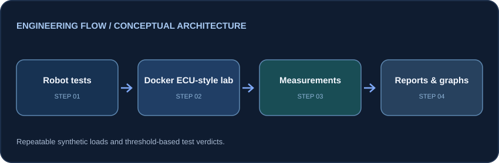

Embedded performance validation · Proof of concept
Embedded Performance Load Lab
A repeatable synthetic ECU-style performance testing lab using Python, Robot Framework, Docker and GitHub Actions.
The engineering problem
Performance and recovery expectations need consistent, repeatable validation and visible measurements rather than manual spot checks.
Architecture / data flow

Robot Framework → Python measurement library + Docker Compose → synthetic ECU-style service / load → CSV + graphs + Robot reports → optional separate AI analysis
Implementation
- Test scenarios cover idle CPU/memory, synthetic load, recovery, startup and repeated restart stability.
- Configurable YAML pass/fail thresholds and load profiles.
- Robot Framework reports, CSV measurements, graphs and automated GitHub Actions execution.
- Optional LLM analysis produces findings without changing deterministic test pass/fail.
Verification and results
The repository documents five test scenarios, unit tests for measurement helpers, configurable thresholds and per-run artifacts. Runtime measurements can vary between machines.
Scope and limitations
Synthetic Docker workloads, not a hardware-in-the-loop production system; does not currently claim latency, jitter or real-time deadline measurement.
Review code, setup instructions and current status on GitHub ↗